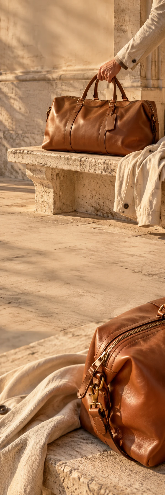

ROAM GOODS
Tassen & reizenWeekend-edit
ROAM GOODS / THE WEEKEND COMPANION
Klaar voor
ergens anders.
Neem mee wat nodig is. Laat ruimte voor de rest.
Een trein later dan gepland. Een straat die je nog niet kent. ROAM is een tasconcept voor alles wat er tussen vertrek en thuiskomen kan gebeuren.
Ontdek de weekendtasTot ergens
onderweg.
Neem mee wat nodig is. Laat ruimte voor de rest.
Ontdek de weekendtas